2018年度读书报告
刷豆瓣推荐的时候，偶然看到#我的2018年度读书报告#这个话题，想想今年自己也读了不少书，是该总结总结了，作为记录以后可以回味和对比，不然书看一本忘一本，对自己成长没多大帮助。
- 未来简史
- 大数据时代
- 启示录
- 把时间当朋友
- 简约至上
- 破茧成蝶
- 茶花女
- 机器人叛乱
- 点石成金
- 创业维艰
- 论中国
- 瞬间之美
- 重新定义公司
- 重新定义团队
- 复杂
- 策略思维
- 设计中的设计 | 全本
- 人生的智慧
- 智慧政府
- 信息架构
- 如何阅读一本书
- 人月神话
- 人件
- 小岛经济学
2018共读了24本书，其中产品设计类7本、管理类5本、心理学类2本、方法论类2本、大数据类2本、文学类1本、哲学类1本、人类学类1本、科学类1本、经济学类1本、国际关系类1本。
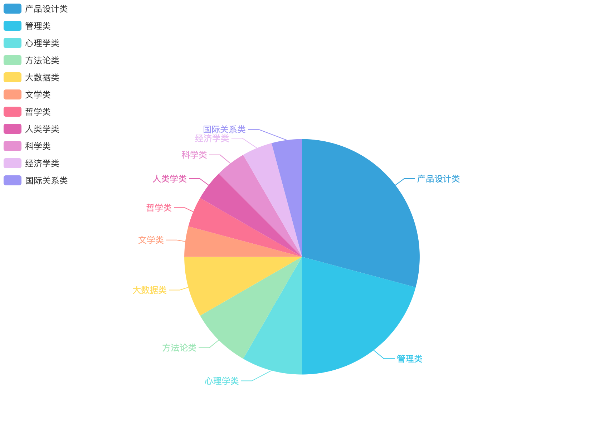
未来简史
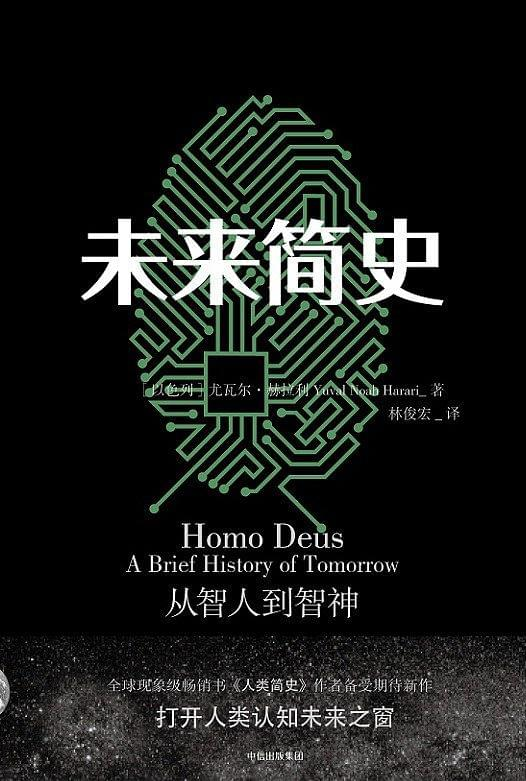
感叹作者拥有丰富的知识体系和超人类整体看问题的视角啊！从去年看完《人类简史》到今年初看完《未来简史》，发现又有更多的东西要学习了。
大数据时代
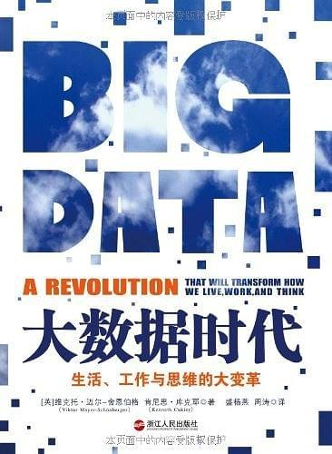
启示录
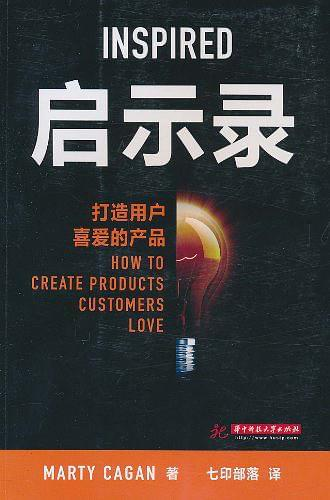
把时间当朋友
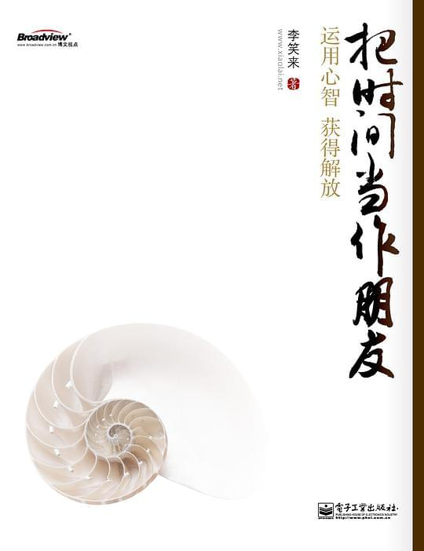
简约至上
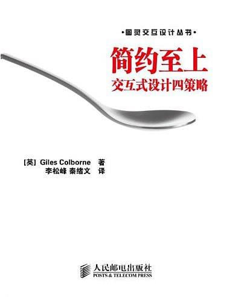
破茧成蝶
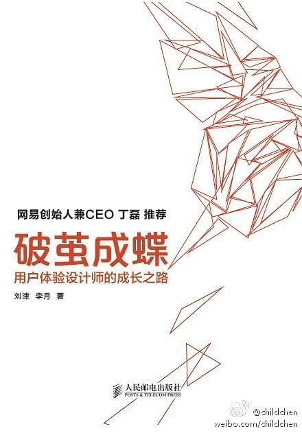
本书干货满满，大量实际案例支撑作者观点。
我觉得如果能真真正正按照书中的方法做产品设计，那么原本不及格的产品起码能达到60~80分吧。
虽然这本书主要目标读者是用户体验设计师或者换种说法是交互设计师，但是我作为一个非主要受众同样受益匪浅，反思了以前工作中存在的各种问题。所以这本书像文章开头所说的：
帮助产品经理、开发工程师、运营推广人员等了解设计师的工作，以便能够更好地与设计师相处和合作。
最后要感谢作者，正是他归纳了工作中的大量经验并在这本书中总结，才能让原本只能意识到有问题而说不出所以然的我能够更直接的意识到有哪些问题需要解决与改善。
茶花女
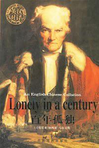
我看完无比感动，女主为爱情所做的选择值得让人为之流泪。
机器人叛乱
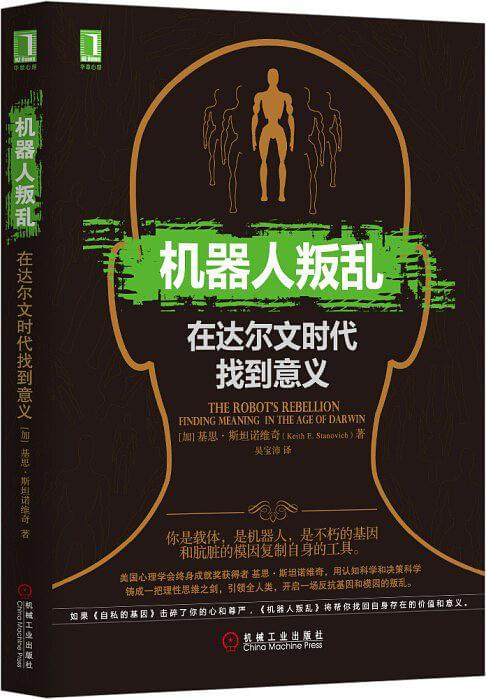
刚刚接触认知学，看的非常累，很多概念看完后还不理解。最重要的收获是让我了解个人目标结构层级，意识到随时需要通过反思来强评估不同阶级偏好。我觉得如果能真正读懂这本书里的核心论点，那么将会影响未来很长一段时间的思考方式，甚至是一辈子。
点石成金
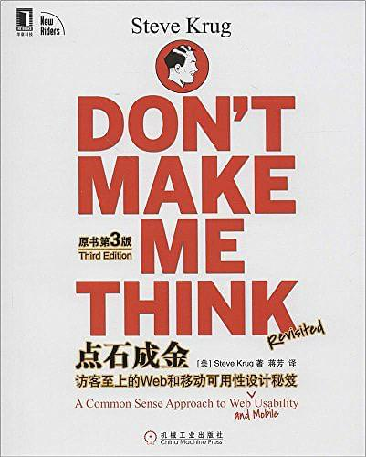
创业维艰
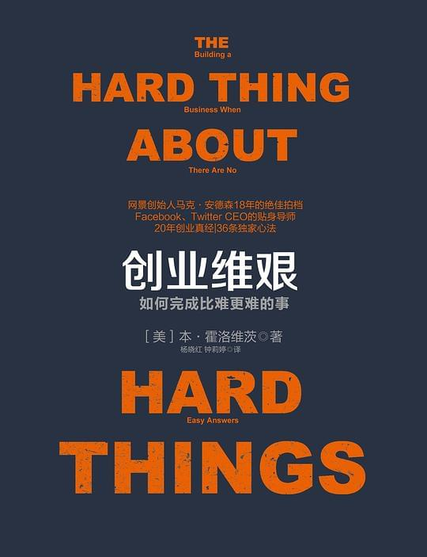
论中国
审时度势，因势利导。
瞬间之美
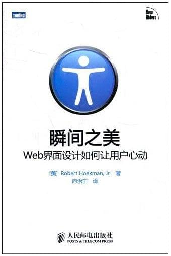
重新定义公司
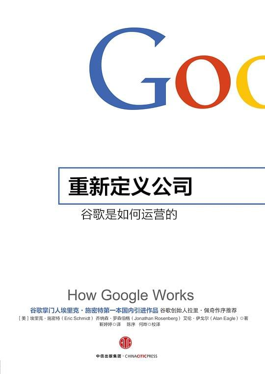
重新定义团队
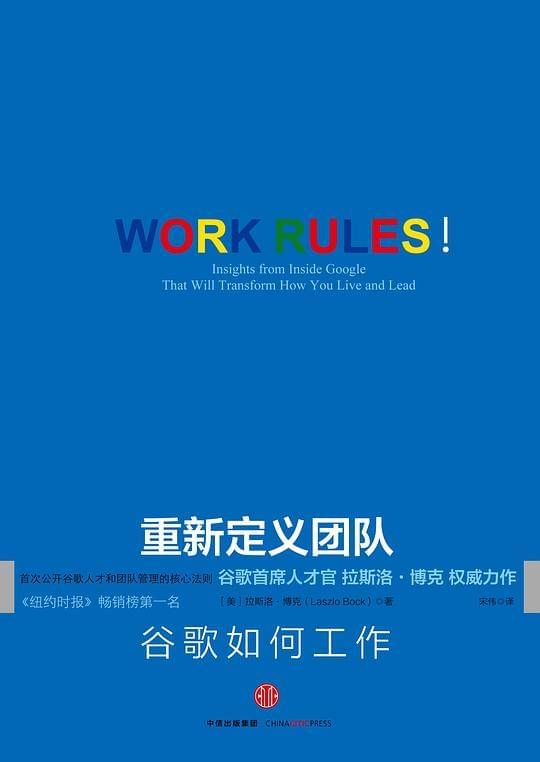
复杂
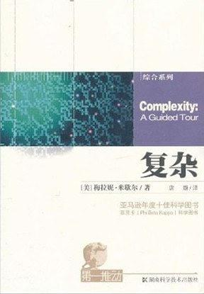
简单规则产生复杂行为，简单个体构成复杂系统，读这本书的意义不在于解释这其中的奥秘，而在于扩充知识广度和深度从而启发思考。本以为能解决我对复杂系统的疑问，现在看来又让我产生了一堆疑问。
策略思维
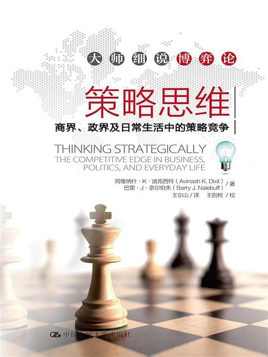
设计中的设计 | 全本
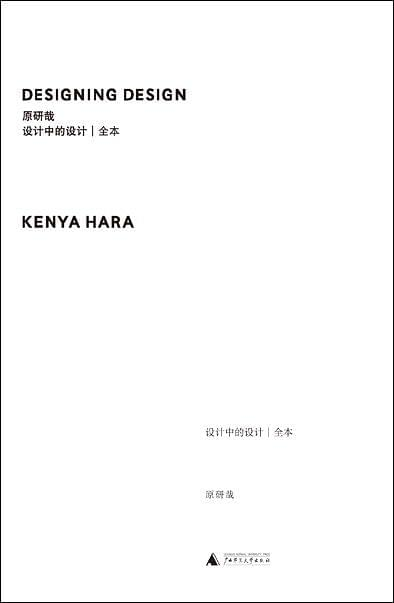
人生的智慧
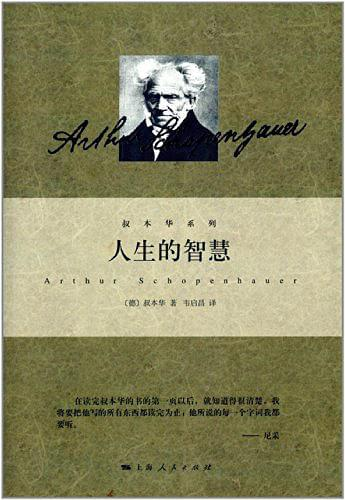
人如何才能不痛苦，或者减少痛苦？那就是通过精神力量控制自己的意欲，让准则和格言约束我们的行为。其实叔本华教育我们要如何成为一个机器人，而我还在意欲的世界里挣扎。
智慧政府
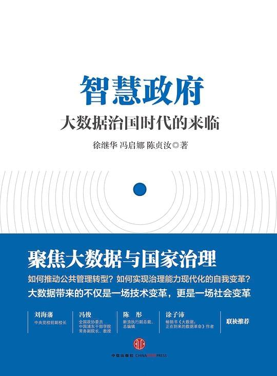
信息架构
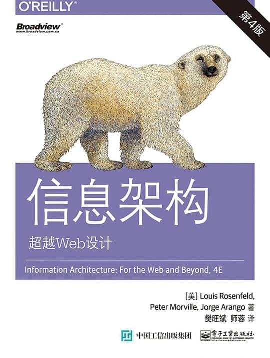
如何阅读一本书
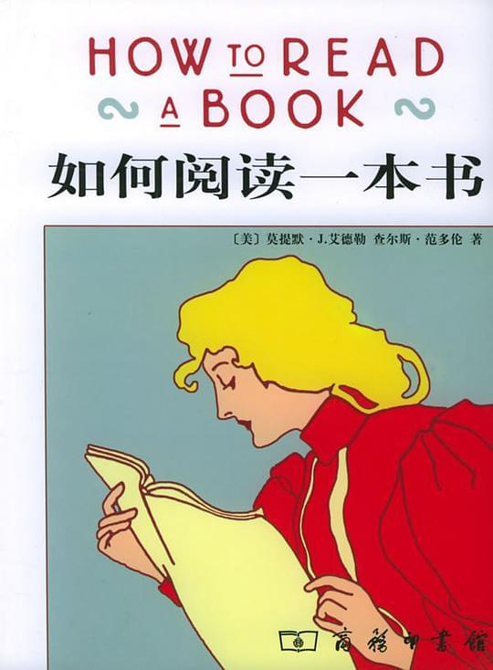
人月神话
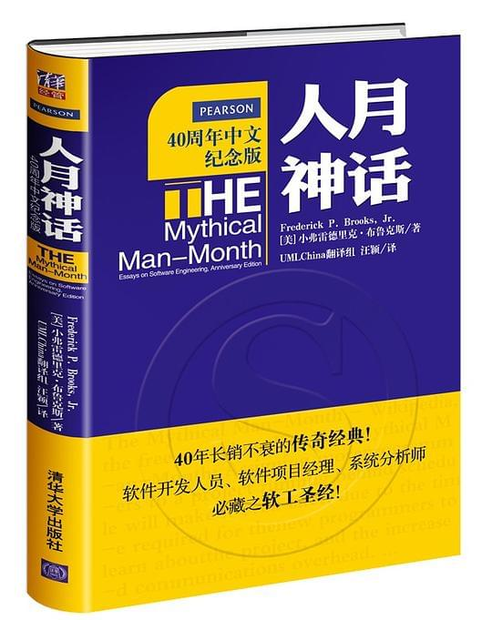
人件
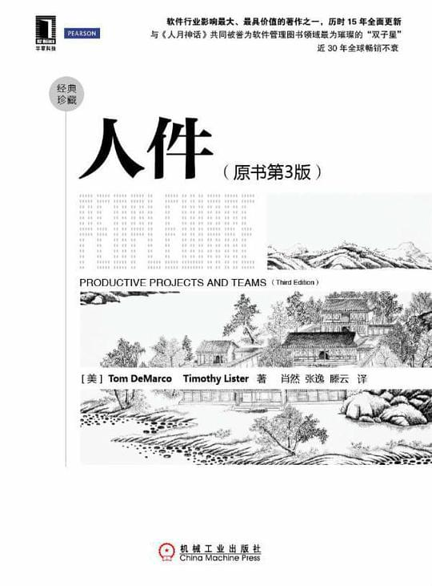
小岛经济学
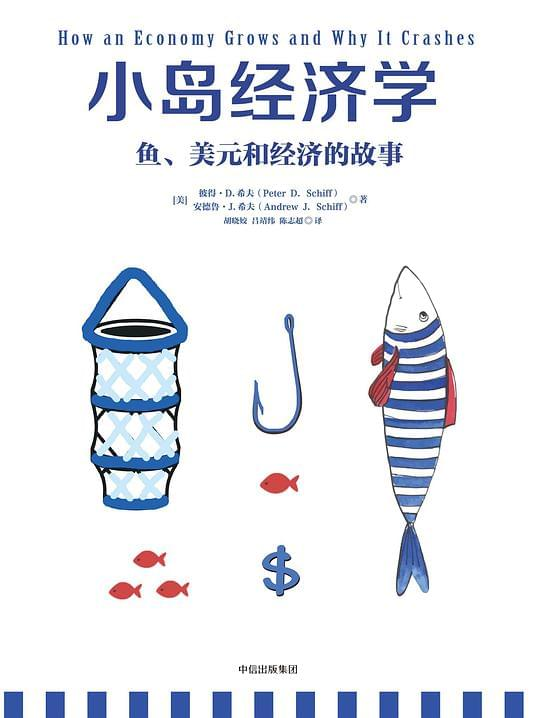